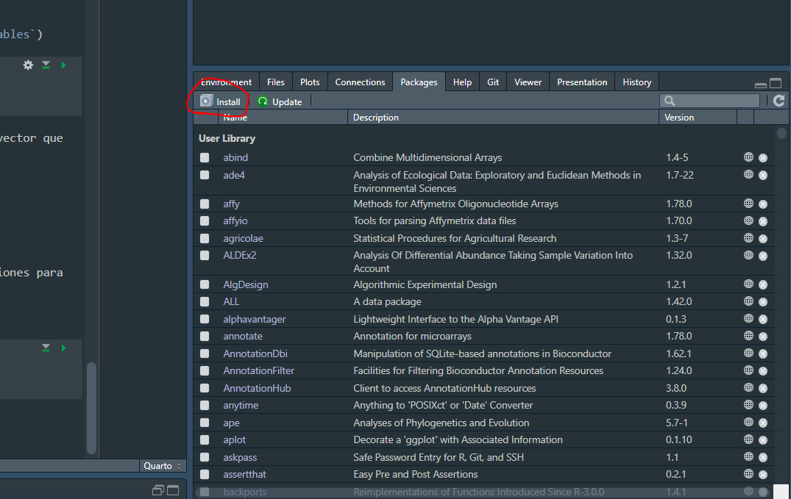

1 + 2 #suma[1] 34 - 3 #resta[1] 15 * 5 #multiplicación[1] 254 / 2 #división[1] 24 ^ 2 #Exponente[1] 164 ** 2 #Exponente[1] 16R es un lenguaje de programación y un entorno de software libre dedicado principalmente al análisis estadístico y la visualización de datos. Desarrollado inicialmente por los laboratorios de AT&T a partir de otro lenguaje de programación.
Entre las caracteristicas que han hecho de R un lenguaje muy popular entre la comunidad científica y academica (ademas de que es gratuito 😉 ) es su capacidad para manejar y analizar grandes conjuntos de datos, junto con una vasta colección de paquetes desarrollados por la comunidad, lo hace altamente versátil y poderoso.
Antes de iniciar en el Tidyverse vamos a revisar algunas funcionalidades básicas de R tales como crear objetos y vectores así como revisar los diferentes tipos de estructuras de datos.
Algunos aspectos importantes que debemos recordar son los siguientes:
R es sensible a las mayúsculas y minúsculas, de manera que A es diferente que a de la misma forma que la función anova() es diferente a la función Anova()
El símbolo # sirve para insertar un comentario en la línea de comando, de manera que todo lo que siga después de # no se ejecutara. Es importante incluir comentarios como parte de las buenas practicas en el uso de R ya que le facilitará el trabajo a tus colaboradores y revisores (y a ti mismo) saber que estas haciendo en cada paso.
En la consola usualmente veremos el símbolo > lo que la indica que la consola esta lista para recibir nuevas instrucciones. Si por el contrario vemos el símbolo + entonces nos esta indicando que no hemos terminado de completar correctamente una línea de código.
Si despúes de ejecutar un comando la consola nos arroja un mensaje de advertencia WARNING significa que el comando se ejecutó pero hay algo inesperado que debe revisarse. Por el contrario si nos arroja un mensaje de error ERROR entonces hay algo mal en la línea de codigo y por lo tanto no se pudo ejecutar.
Podemos utilizar R para realizar operaciones básicas:
1 + 2 #suma[1] 34 - 3 #resta[1] 15 * 5 #multiplicación[1] 254 / 2 #división[1] 24 ^ 2 #Exponente[1] 164 ** 2 #Exponente[1] 16Operadores en R:
| Operador | significado |
|---|---|
| * | Multiplicación |
| - | Resta |
| + | Suma |
| ^ | Elevar a potencia |
| / | División |
| < | Menor que |
| > | Mayor que |
| <= | Menor o igual que |
| >= | Mayor o igual que |
| == | Exactamente igual |
| != | Distinto |
Para crear un nuevo objeto se puede usar “=” o “<-”. Este nuevo objeto, se almacenará en la memoria y se puede usar para otras operaciones.
x <- 2 #asignar a la variable x el valor de 2
x
y = 3 #asignar a la variable y el valor de 3
y
#resultado de la suma x + y
x + y
z <- x + y #asiganr el resultado de x + y a la variable z
zx a 5. ¿Que pasa con z?zLas variables no solo puede contener números, sino caracteres, listas o incluso gráficos
caracter <- "siete"
caracter[1] "siete"Es posible asignar casi cualquier nombre a un objeto aunque existen algunas reglas y recomendaciones que hay que considerar:
2x incorrecto pero x2 es valido).ifelse, for, c, etc.).¿Cuales de estas formas de definir una variables es incorrecta?
mi.variable <-
mi_variable <-
mi variable <-
mi-variable <-
R tiene los siguientes tipos de datos basicos:
logical: valores lógicos, pueden ser TRUE o FALSEnumeric: números reales (1.0,2,3.1416, 3E-10)character:caracteres (letras y/o números). Delimitados por “” (“uno”, “Miguel”, “FALSO”)interger:valores enteros (1,2,3)NA: dato no disponibleNaN:no es un número (not a number)Por otro lado, las estructuras de datos pueden ser de tipo vector, data.frame, matriz, arreglo o lista:

fuente: http://venus.ifca.unican.es/Rintro/_images/dataStructuresNew.png
Es importante resaltar que solamente los data.frame pueden contener distintos tipos de datos (números, caracteres, etc) mientras que el resto solo puede contener un tipo de dato (solo caracteres, solo números, etc).
Si no sabes que tipo de dato contiene una variable, se puede sar la función class()
class(x) [1] "numeric"class(caracter) [1] "character"Un vector es la estructura de datos más sencilla en R. Un vector es una colección de uno o más datos del mismo tipo.
Para crear un vector utilizamos el comando c(), de combinar
numeros <- c(1, 2, 3)
numeros[1] 1 2 3También podemos crear un nuevo vector a partir de otros objetos en el ambiente, como por ejemplo, los objetos x, y y z que ya tenemos.
variables <- c(x, y, z)
variables[1] 2 3 5Los vectores tambien puende contener elementos de otros tipos como caracteres, los cuales tienen que ir dentro de comillas " ".
nombres <- c("Juan", "Pepe", "Sofia")¿Que pasa si intentamos unir el vector de caracteres (nombres) con numeros (variables)
nombre_variable <- c(nombres, variables)
nombre_variable[1] "Juan" "Pepe" "Sofia" "2" "3" "5" Como las cadenas de texto son el tipo de dato más flexible, siempre que creamos un vector que incluye un dato de este tipo, el resultado será un vector de texto.
R hace uso de paquetes que le permiten extender su funcionalidad y disponer de funciones para aplicaciones especificas.
Para instalar un paquete podemos ejecutar la siguiente linea:
install.packages("ggplot2")o hacerlo directamente desde la consola de Rstudio en la pestaña “Paquetes”

Al instalar un paquete no significa que ya podamos utilizar sus funciones, primero tenemos que cargarlo dentro de nuestro ambiente
Para “activar” o cargar el paquete dentro del ambiente es necesario ejecutar
library(nombre_del_paquete)